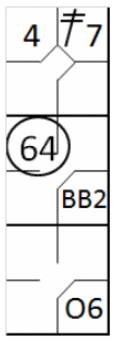
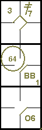

Exemple 30: Si, avec un coureur en première base et un autre en deuxième base, le frappeur (quatrième dans l'ordre des frappeurs) frappe la balle vers l'arrêt-court, qui lance en deuxième base à temps pour éliminer le coureur arrivant de la première base, nous noterons l'arrivée de l'autre coureur en troisième base par le numéro quatre, tandis que l'arrivée du frappeur en première base sera attribuée au choix du défenseur. En effet, le coureur a avancé sur le coup sûr (l'arrêt-court a clairement compris qu'il n'avait pas le temps d'éliminer le coureur, sinon il aurait lancé en troisième base), tandis que le frappeur a atteint la première base parce que la défense a préféré éliminer un coureur plus avancé.
| WBSC | Transcription dans l'outil de scorage | Outil |
|---|---|---|
|
 |
/* Le première batteur frappe un double dans le champ gauche */ action { batter -> 2B7 } /* Le batteur suivant gagne la première base sur un 'base on ball' */ action { batter -> BB } /* Le batteur suivant frappe une balle vers l'arrêt court qui récupère la balle et la relaie au défenseur de la deuxième base pour retirer le coureur arrivant de la premier base */ action { batter -> O6 , runner1 -> 64 , runner2 -> + } |
 |